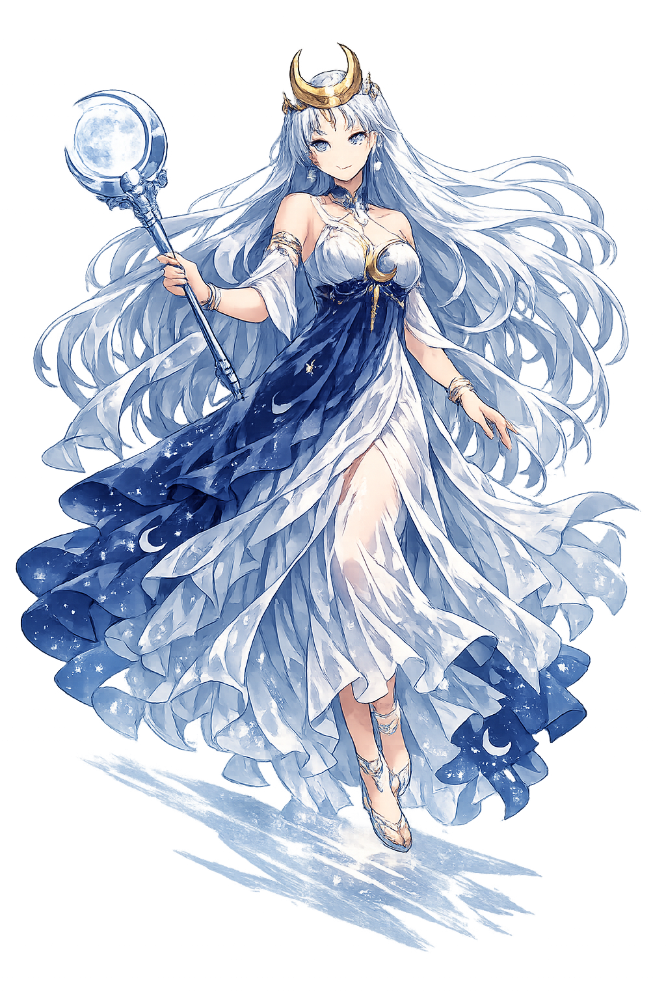

Ancient Domain
Selḗnē is the moon personified: a goddess who drives her silver chariot through the night, governs the menstrual cycle, and presides over dreams and magic. Where Hēlios reveals, Selḗnē conceals and transforms.
Extended Lore
Etymology · Phonology · Orthography · Cultural Legacy · Primary Sources

Essential information about Selēnē, Moon, Night Light
From original script to Unicode restoration
Selḗnē is Tier 1 because the Greek Σελήνη contains both stress (acute on the short έ) and length (long η in the final syllable). The name shares a root with 'shine' and 'lunar' across Indo-European languages.
Character-by-character philological analysis
| Character | Unicode | Name | Block | Phonetic Role |
|---|---|---|---|---|
| S | U+0053 | Latin Capital Letter S | Basic Latin | Sigma |
| e | U+0065 | Latin Small Letter E | Basic Latin | Short epsilon |
| l | U+006C | Latin Small Letter L | Basic Latin | Lambda |
| ē | U+0113 | Latin Small Letter E with Macron | Latin Extended-A | Eta: long epsilon |
| n | U+006E | Latin Small Letter N | Basic Latin | Nu |
| ē | U+0113 | Latin Small Letter E with Macron | Latin Extended-A | Eta: long epsilon |
The Tier 1 classification reflects which ancient features stress, length, or script are preserved in this restoration.
From ancient cult to modern Unicode
Selḗnē is the moon personified: a goddess who drives her silver chariot through the night, governs the menstrual cycle, and presides over dreams and magic. Where Hēlios reveals, Selḗnē conceals and transforms.
The Romans identified Selḗnē with Luna, though as with Hēlios/Sol, the Greek goddess was increasingly absorbed by Artemis-Diana in later periods. In Hellenistic and Roman Egypt, Selḗnē was syncretized with Isis, who wears a lunar disk on her head. Neoplatonists saw the moon as the boundary between the material and immaterial realms, and Selḗnē as the mediator between Hēlios and the earth. The English words 'selenography' (study of the moon's surface) and the chemical element selenium derive from her name.
Selḗnē is the archetype of the moon as feminine, cyclical, and magical. She governs not only the night sky but the rhythms of women's bodies and the agricultural calendar. The crescent moon remains one of humanity's most universal symbols, appearing on flags, coins, and religious iconography across cultures. In modern witchcraft and Neopaganism, the moon goddess — whether called Selene, Diana, or Hecate — is central. Restoring Selḗnē restores the Greek name of the moon as a conscious, luminous presence.
Restoring Selēnē in a domain name is more than orthographic accuracy. It is a statement that the internet should recognize the full range of human writing — not only the ASCII keyboard.
Common questions about Selēnē, Moon, Night Light, and Unicode restoration
In reconstructed pronunciation, Selēnē is /se.lɛ́.nɛː/ — approximately 'seh-LAY-nay' — the second syllable carries the pitch, and the final vowel is long and pale..
Selēnē means Moon, light (from σέλας) in the greek tradition.
Selēnē is associated with Crescent moon (Her boat or bow; the waxing and waning phases), Silver chariot (The lunar vehicle), Oxen (The animals that draw her chariot), Torch (The pale light she carries through darkness), Veil (The clouds that obscure and reveal her).
Plain ASCII selene strips the stress, length, and script that make the name specific. Unicode restoration returns the name to its original written dignity.
Selḗnē fell in love with Endymion, a beautiful shepherd or king, and asked Zeús to grant him eternal youth. Zeüs put him into eternal sleep in a cave on Mount Latmus in Caria. Each night Selḗnē visits him; some say their union produced fifty daughters. The myth turns the moon's monthly return into a romantic rendezvous and makes sleep the price of immortality.
The philological foundations of this restoration
Every claim on this page is grounded in established scholarship. The orthographic restorations follow disciplinary convention. The etymological chain follows the best available reference works. This is not invention — it is resurrection through scholarship.
You have traced the name from its earliest attestation to its Unicode restoration. Now return to the myth. The story is where the name lives.
Back to Lore